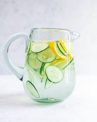

Cucumber Water

Only 57% of adults drink more than 4 cups of water a day - that's a serious drought. Store in the refrigerator up to 3 days.
Ingredients
- 22 Fluid Ounces Water
- 4 Slices Tangerine
- 5 Slices Cucumber
- 2 Sprigs Thyme
Steps
- Step 1: Combine Ingredients
- Step 2: Cover and Refrigerate